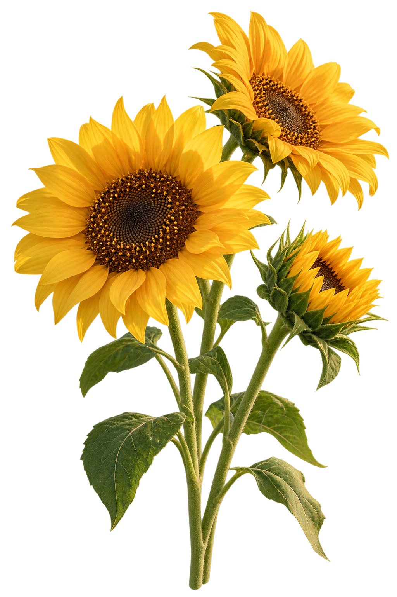
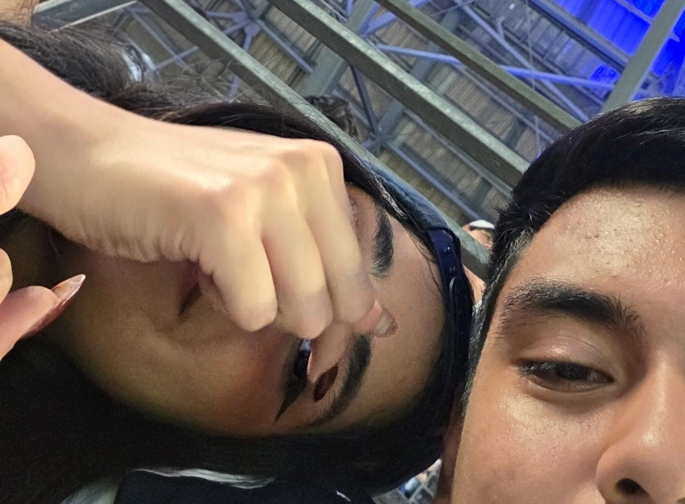
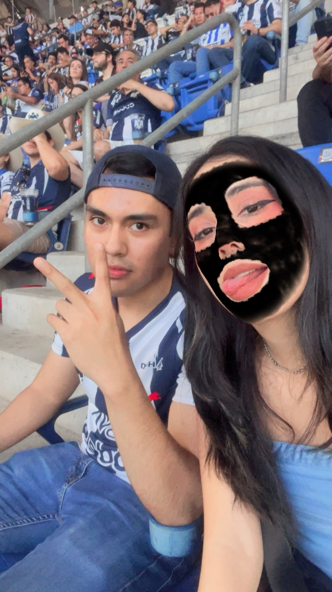
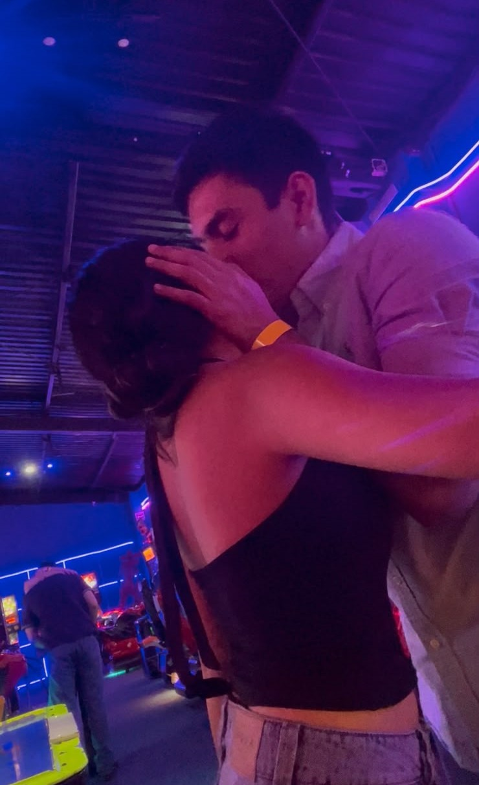
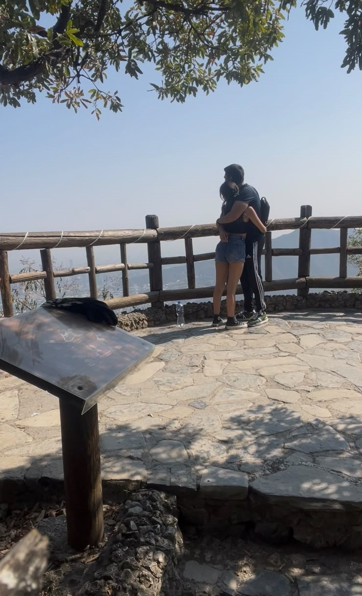

21 de septiembre · flores amarillas
Aunque sé que no te encantan los girasoles…
te hice algo, porque cualquier pretexto es bonito si se trata de recordarte lo especial que eres para mí.

Para ti, Damaris
No son solo flores amarillas.
Son una forma de decirte que me encanta coincidir contigo, compartir momentos y seguir construyendo recuerdos juntos.
Gracias por cada risa, cada aventura y por hacer que hasta los días normales tengan algo especial.
Con cariño,
Pato 💛
Un poquito de nosotros
Mis lugares favoritos son donde estás tú.




🌻
Feliz Día de las Flores Amarillas
Tal vez los girasoles no sean tus favoritos, pero tú sí eres de mis personas favoritas.